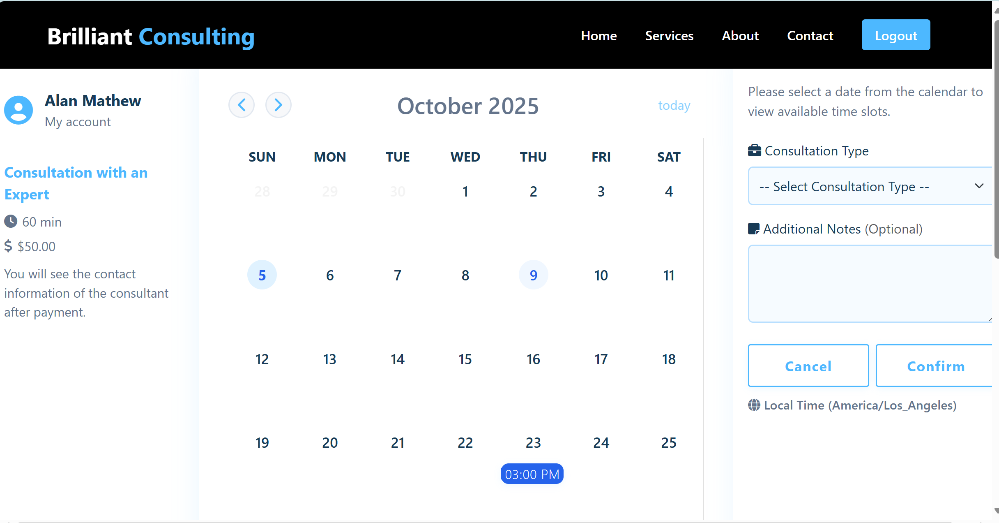

Creating Brilliant Consulting
Published: Summer 2025
This summer, I embarked on an exciting journey to create Brilliant Consulting - a scheduling application for a small tech consulting business. As a self-taught web developer, this project pushed me to learn new technologies and solve real-world problems.
The Challenge
The client needed a comprehensive scheduling system that could handle multiple consultants, client appointments, and resource management. The existing manual process was time-consuming and prone to double-bookings.
Technology Stack
For this project, I chose a modern web development stack:
- Frontend: HTML5, CSS3, and vanilla JavaScript for a clean, responsive interface
- Backend: Node.js with Express for the server-side logic
- Database: PostgreSQL for reliable data storage
- Deployment: Heroku for easy cloud hosting
Key Features Developed
The application includes several core features:
- Interactive calendar view for appointment scheduling
- Client management system with contact information
- User and Admin dashboard
- Stripe payment integration for seamless billing
- Automated email notifications
Lessons Learned
Building Brilliant Consulting taught me the importance of user-centered design and iterative development. Working closely with the client helped me understand their workflow and create a solution that truly met their needs.
This project reinforced my passion for creating practical solutions through web development and gave me confidence to tackle more complex challenges.